@Digitalp2pbot
En este sitio encontrarás información sobre @Digitalp2pbot. Este es un bot de Telegram para comprar y vender USDT,USDC, de forma P2P, con tu moneda local y sin hacer KYC o entregar datos personales.
Guía de inicio rápido
-
Descarga una wallet compatible con USDT, USDC (Wallets recomendadas).
-
Obtén un usuario de Telegram.
-
Inicia @DigitalP2PBot.

-
Encuentra ofertas de compra o venta de USDT, USDC en:
-
El canal general de ofertas: @digitalp2porders

-
Cuando tomes una oferta @Digitalp2pbot te guiará paso a paso en el proceso de compra/venta.
-
Si no encuentras una oferta que te convenga, crea una tú y espera a que alguien la tome. Escribe en @DigitalP2PBot
/buypara comprar USDT USDC, o/sellpara vender USDT USDC, de acuerdo a lo que quieras hacer y este te guiará en el proceso. -
Comienza a comprar y vender.
-
Encuentra respuestas a tus dudas en la sección FAQ.
Recomendaciones
-
Si tienes alguna duda que no esté respondida en https://Digitalp2p/aprende únete al grupo de soporte y pregunta allí.
-
Reporta errores o sugiere mejoras en nuestros repositorios de GitHub.
-
Síguenos en X para que no te pierdas los anuncios principales.
FAQ
Aquí respondemos las preguntas frecuentes hechas por nuestros usuarios.
¿Qué es @DigitalP2PBot?
DigitalP2PBot es un sistema de intercambio de USDT-USDC por moneda local, que permite realizar transacciones persona a persona de forma fácil y segura utilizando la red Polygon. Es un bot de Telegram que se puede usar de forma pseudónima, sin registro de usuario ni verificación de identidad. Es una herramienta que solo custodia los USDT-USDC en un contrato inteligente el tiempo mínimamente necesario, lo que brinda mayor seguridad a sus usuarios respecto a servicios de intercambio que tienen wallets internas y custodia total de los fondos.
Ir a @DigitalP2PBot
¿Qué es la red Polygon ?
[Polygon] es una plataforma blockchain que mejora la escalabilidad y la velocidad de la red Ethereum. Se trata de una alternativa a Ethereum que ofrece un entorno de desarrollo de aplicaciones más eficiente. Es una solución de escalabilidad que permite incrementar exponencialmente el número de transacciones y la velocidad de las mismas. Esto permite a su vez reducir drásticamente las comisiones de red. Los pagos se vuelven casi instantáneos y de costo muy bajo.
¿Qué necesito para usar @DigitalP2PBot?
Solo necesitas una cuenta en Telegram con el "username" o nombre de usuario activado para inicializar el bot e interactuar con él y una wallet o monedero que soporte USDT-USDC por la red Polygon. Aquí te dejamos algunas wallets recomendadas.
¿Cómo inicializo el bot?
Abre el chat privado con @DigitalP2PBot y haz clik en "INICIAR", o ejecuta el comando /start.
- Si no inicializas el bot primero, no podrás tomar ninguna orden desde el canal donde son publicadas.
¿Cuáles son los canales para realizar intercambios en Telegram?
Para crear tus órdenes de Compra / Venta de USDT-USDC usa el chat con @DigitalP2PBot.
Las ofertas creadas con @DigitalP2PBot son publicadas en el canales de Telegram @digitalp2porders desde donde se pueden tomar al pulsar el botón de Comprar USDT-USDC o Vender USDT-USDC que aparece debajo de cada una.
¿Necesito llenar algún registro o verificación de identidad?
¡NO!. Ninguno de tus datos personales es requerido, los intercambios son totalmente entre pares y @DigitalP2PBot no recopila ni almacena ninguna información personal de las partes implicadas.
¿Qué tipo de información recopilan de cada usuario?
Para efectos del sistema de reputación de usuario, el bot recopila algunas estadísticas de tus intercambios. Específicamente, la cantidad de transacciones concretadas, el volumen total comerciado, la calificación de contraparte y el registro de disputas de exitir alguna. De esta información, solo son públicas por defecto la cantidad de transacciones y la calificación de contraparte. Es opcional mostrar tanto el volumen total comerciado como tu nombre de usuario ya que no se muestran por defecto (tú eliges mostrarlo o no).
En caso de que desees mostrar tu nombre de usuario y/o volumen comerciado para acompañar tu reputación en las ofertas que publicas, deberás hacerlo manualmente usando los siguientes comandos:
/showusername yes
/showvolume yes
Cada comando se envía como un mensaje directo al bot.
¿Cómo funciona el sistema de reputación de usuario?
Por cada transacción que realices se te pedirá calificar a tu contraparte, a la vez que esta te calificará a ti. Para ello, DigitalP2PBot cuenta con un sistema de puntuación de 5 estrellas que te permitirá valorar tu experiencia, donde 1 estrella es la menor calificación y 5 estrellas es la mayor.
Para obtener la reputación el bot realiza un cálculo iterativo de la media y la desviación estándar de las calificaciones y las operaciones exitosas, por lo que en las primeras operaciones, aunque te hayan calificado con el máximo, tu reputación no será alta sino que aumentará progresivamente a medida que vayas haciendo operaciones con buenas calificaciones.
Cuando crees una oferta, esta incluirá por defecto el número de operaciones exitosas que realizaste, las calificaciones recibidas de tus contrapartes, y el número de operaciones realizadas. Recomendamos tener en cuenta todos estos aspectos al tomar una oferta para evitar estafas.
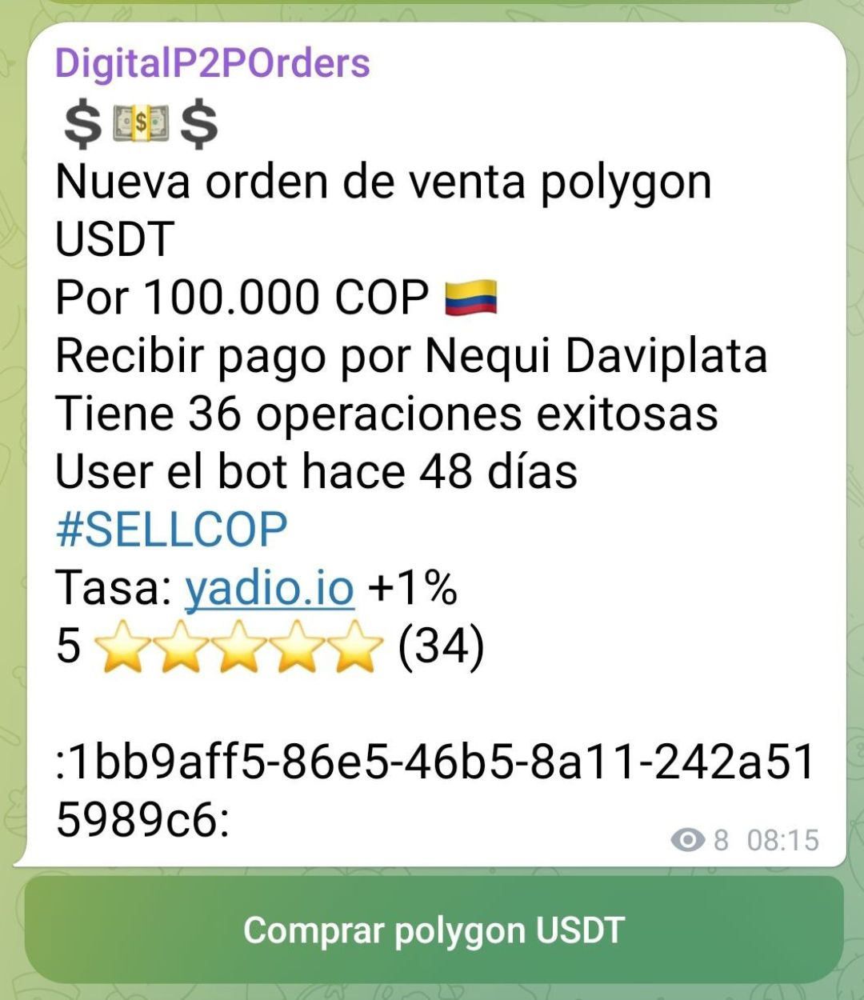
¿Cómo creo una orden de venta?
Al chatear con @DigitalP2PBot encontrarás un botón de "Menú". Púlsalo para desplegar la lista de comandos que puedes usar. Selecciona el comando de venta: /sell, para activar el asistente (wizard) que te guiará por el proceso de vender.
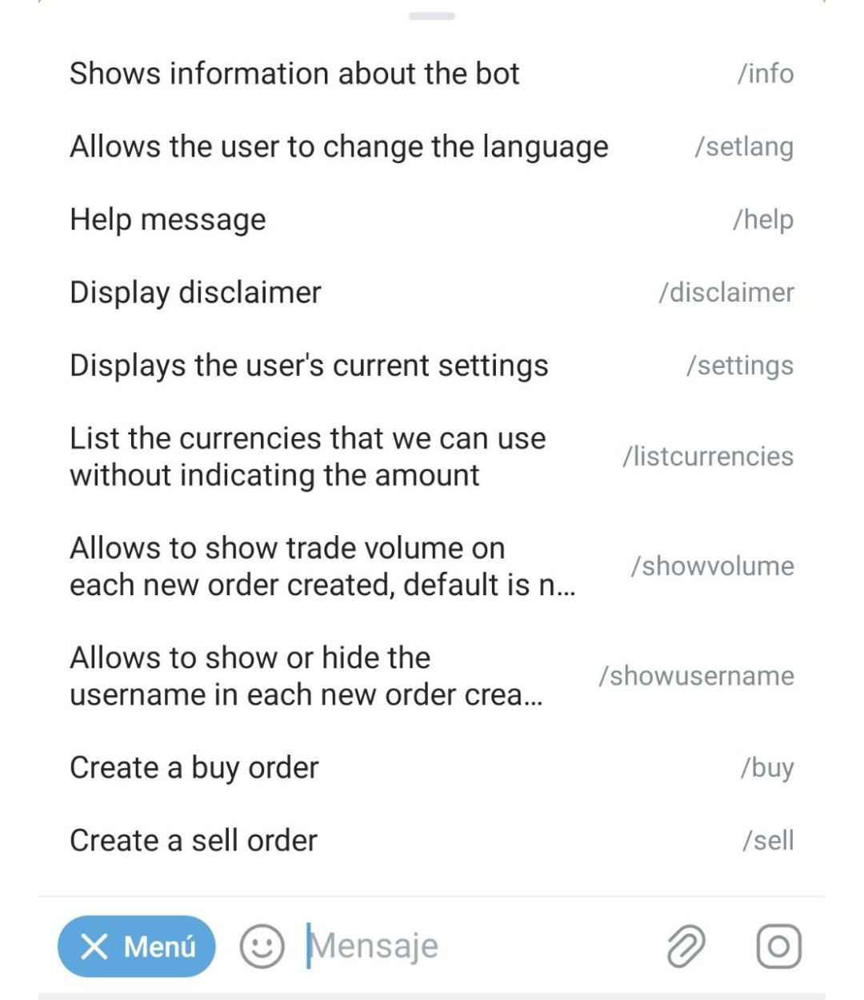
Una vez activado, el asistente te pedirá que oprimas el boton del token (USDT-USDC) que quieres vender:
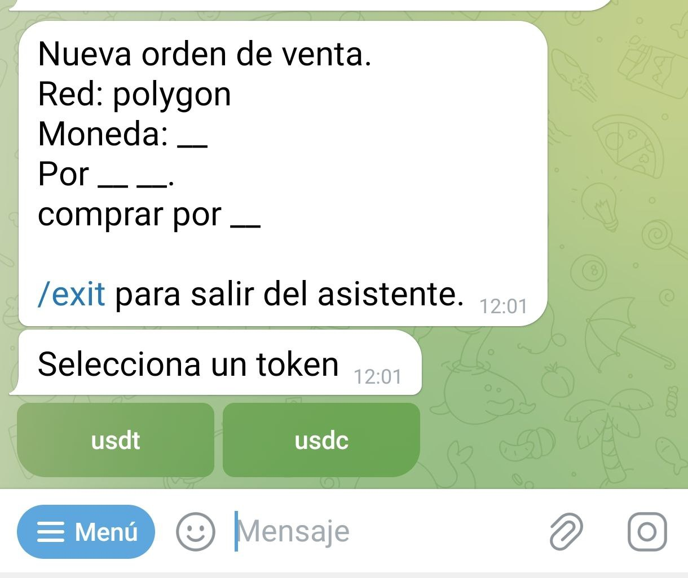
A continuación, deberás introducir la moneda fíat, que quieres a cambio de tus USDT-USDC, en este caso seleccionamos el Peso Colombiano (COP). Recuerda que si tu moneda no esta, tambien la puedes escribir.
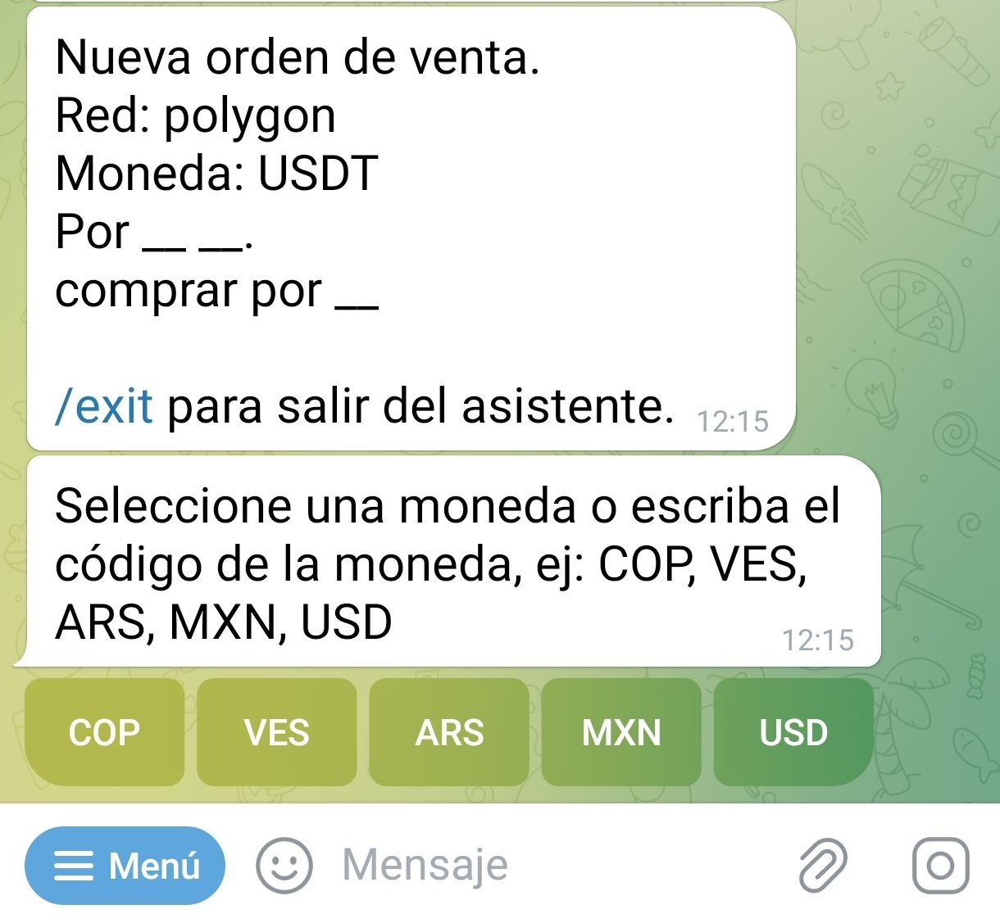
El bot te preguntará el monto, en Pesos Colombianos (COP), que quieres vender, en este ejemplo vamos a vender 100000 Pesos colombianos (COP). También puedes introducir un rango de cantidades a vender, separando los números por un guion (-), ejemplo (10000-100000)
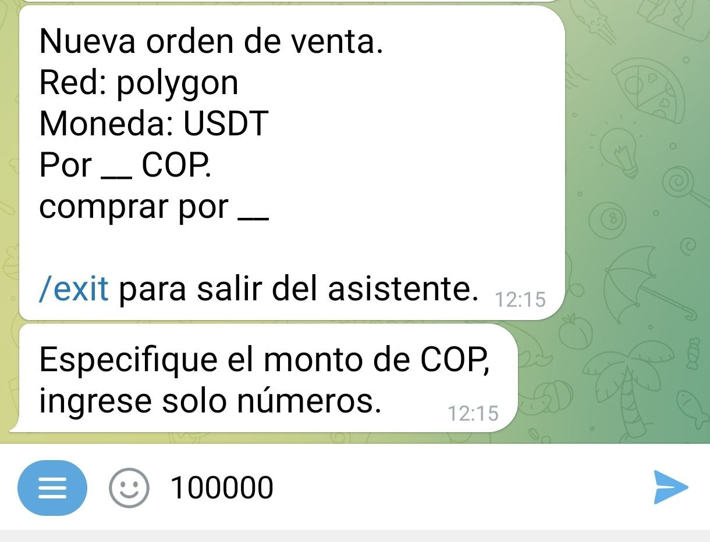
Lo siguiente que te solicita el asistente es el porcentaje de prima o descuento que quieres en tu intercambio. Si quieres aumentar la tasa de mercado (prima), selecciona un número positivo; si quieres disminuirla (descuento), selecciona un número negativo. En caso de no querer ninguna, usa el botón "Sin descuento sin prima".
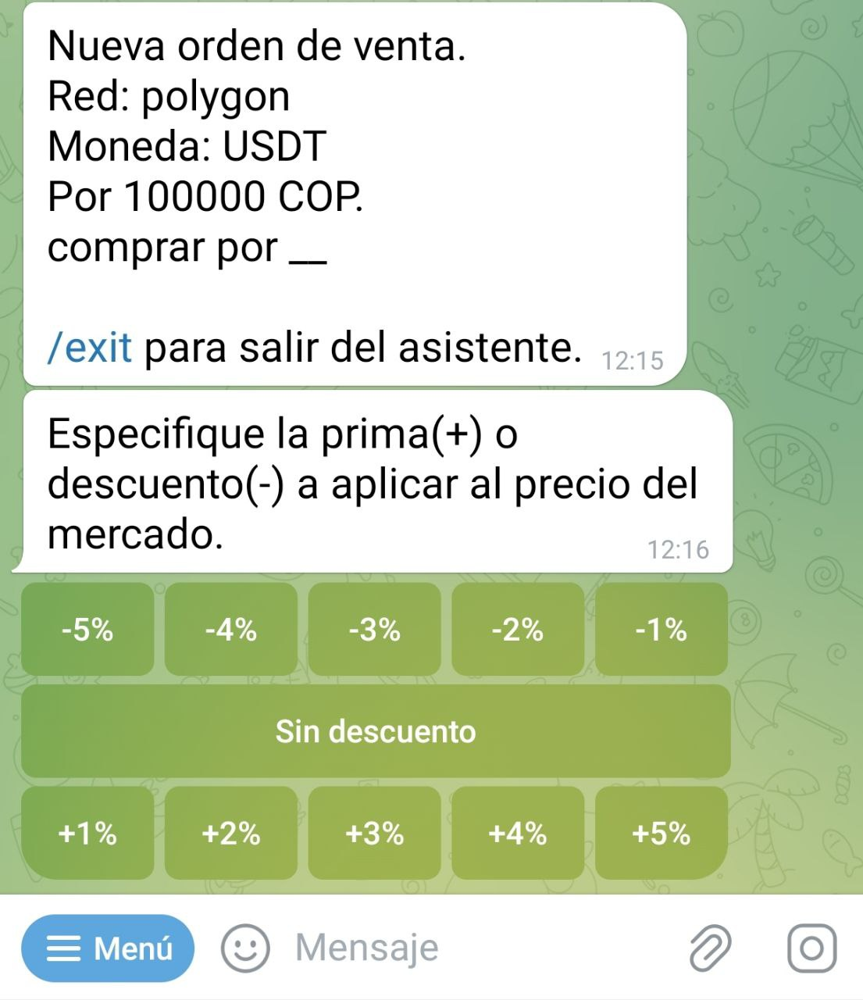
A continuación, deberás especificar el método de pago. En este campo puedes ponerte creativo y añadir emoticones o lo que consideres para hacer atractiva tu solicitud.
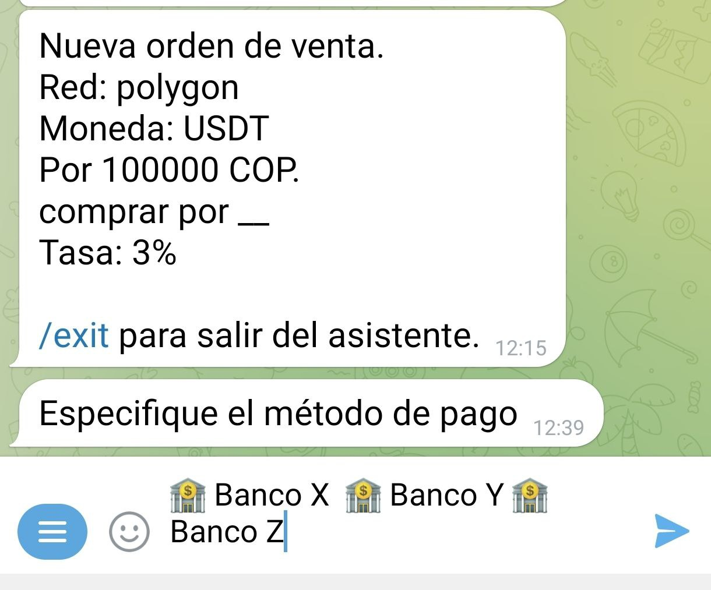
El bot procederá a publicar tu oferta en el canal de ofertas de la comunidad.

La oferta permanecerá visible por 23 horas en el canal de ordenes, si nadie la toma antes de ese tiempo la oferta se elimina automaticamente.
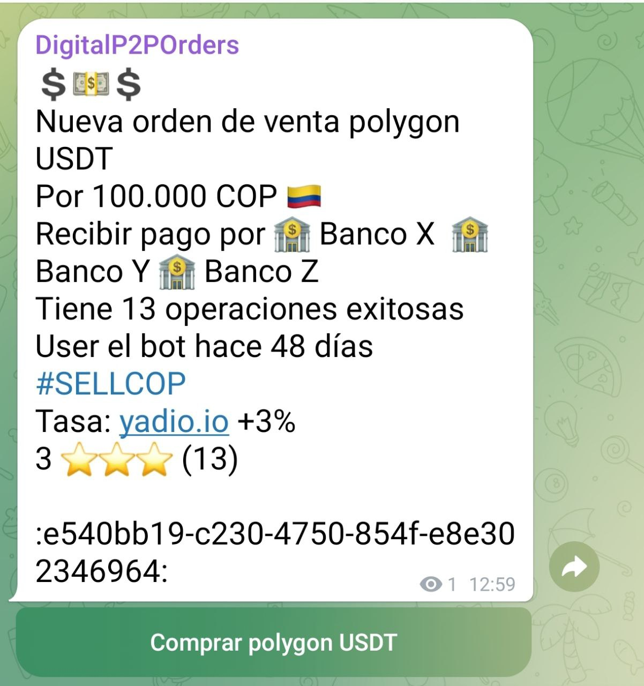
En cualquier momento puedes cancelar la oferta, siempre y cuando nadie la haya tomado, usando el comando /cancel seguido por el identificador de la orden. También puedes copiar el comando más el identificador en el chat con el bot. El asistente te devolverá un mensaje confirmando la cancelación y se removerá tu oferta del canal de ofertas.
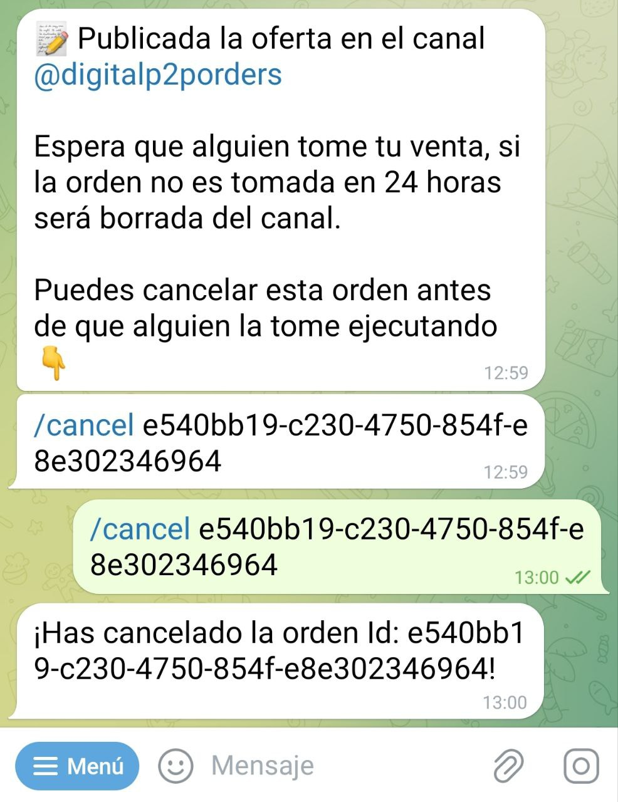
En caso de que tu venta sea tomada, el bot le pedirá a tu contraparte que ingrese una direccion donde recibir los USDT-USDC.
Al mismo tiempo, te pedirá que pagues el monto de los USDT-USDC correspondiente, más una comisión del 0,6%. Recuerda que la red puede cobrarte un monto adicional. Esa cantidad dependerá de la congestion de la red. El bot no tiene que ver nada con ese monto.
En este momento el bot pondrá en contacto a ambas partes para que discutan los detalles del intercambio.
Una vez que el bot recibe el aviso de que el monto en fíat fue pagado, te envía un alerta para que revises tu cuenta. Si todo está en orden, puedes liberar los USDT-USDC con el comando /release seguido del identificador de transacción (o copia y pega el texto en el chat del bot) y se ejecutará la transacción.
El intercambio ha terminado. Ahora puedes calificar a tu contraparte.
Puedes salir del asistente en cualquier momento ejecutando el comando /exit.
Para ejecutar la misma orden de venta, sin usar el asistente, debes escribir tu orden con los detalles: /sell <monto en USDT-USDC> <monto en fiat> <código fiat> <método de pago> [prima/descuento] (sin los caracteres especiales).
Ejemplo: /sell 100 400000 COP "banco xyz" Vendo cien dolares por cuatrocientos mil pesos cobro por banco xyz
En caso de haber alguna variable no compatible, el bot te lo indicará durante el proceso de creación de la orden. Al completarla, la misma se publicará en el canal de intercambio y será visible por un período de 23 horas.
¿Cómo creo una orden de compra?
El procedimiento es exactamente el mismo que para la orden de venta. Solo que al pulsar el botón "Menú", debes seleccionar el comando /buy en lugar de /sell.
Este activará el asistente (wizard) que te guiará por el proceso de comprar. Una vez activado, el asistente te pedirá que especifiques la moneda fíat con la que quieres transar:
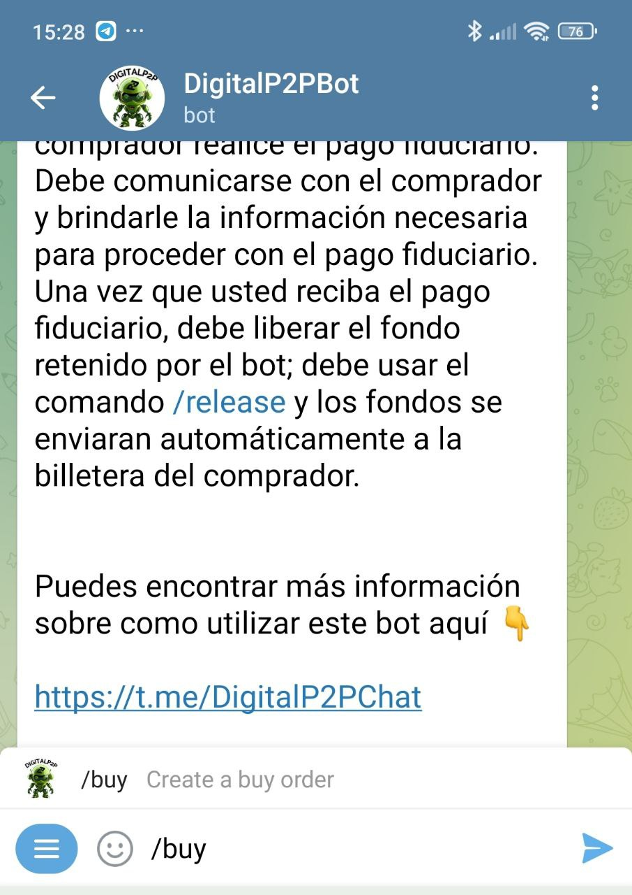
A continuación deberás introducir el token (USDT-USDC), que quieres comprar.
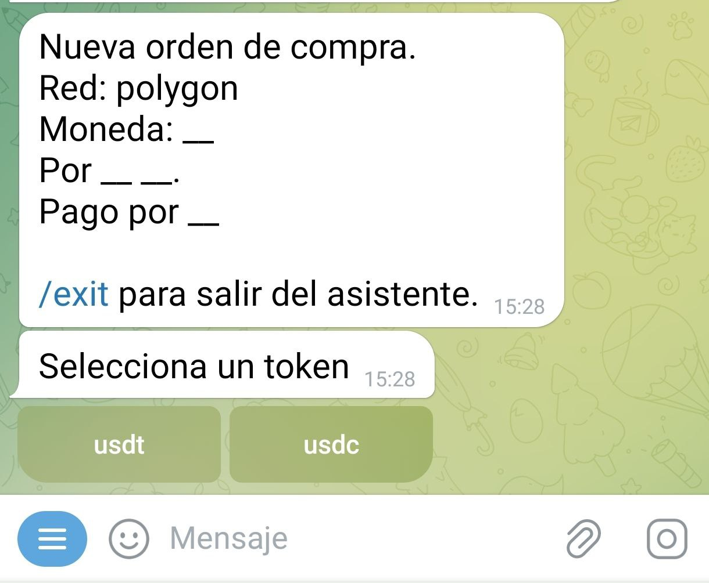
A continuación, deberás introducir la moneda fíat, con la que comprarar los USDT-USDC, en este caso seleccionamos el Peso Colombiano (COP). Recuerda que si tu moneda no esta, tambien la puedes escribir.
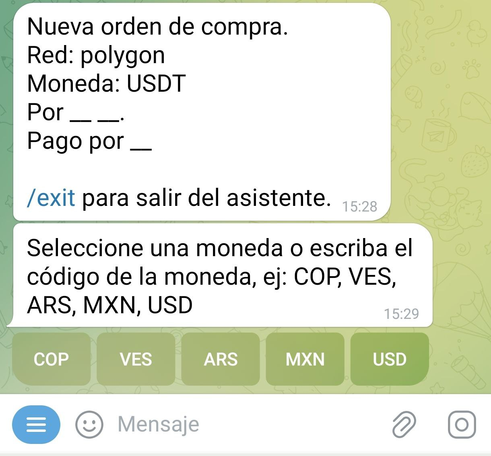
El bot te preguntará el monto, en Pesos Colombianos (COP), que quieres comprar, en este ejemplo vamos a comprar 200000 Pesos colombianos (COP). También puedes introducir un rango de cantidades a comprar, separando los números por un guion (-), ejemplo (10000-200000)
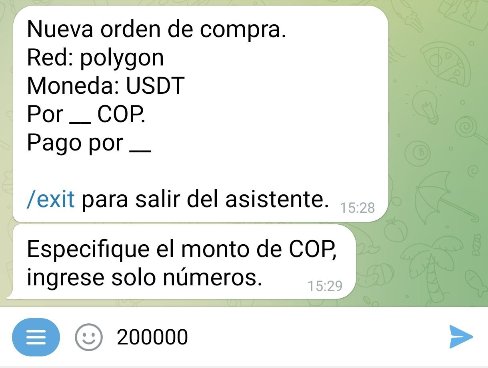
Lo siguiente que te solicita el asistente es el porcentaje de prima o descuento que quieres en tu intercambio. Si quieres aumentar la tasa de mercado (prima), selecciona un número positivo; si quieres disminuirla (descuento), selecciona un número negativo. En caso de no querer ninguna, usa el botón " Sin descuento Sin prima ".
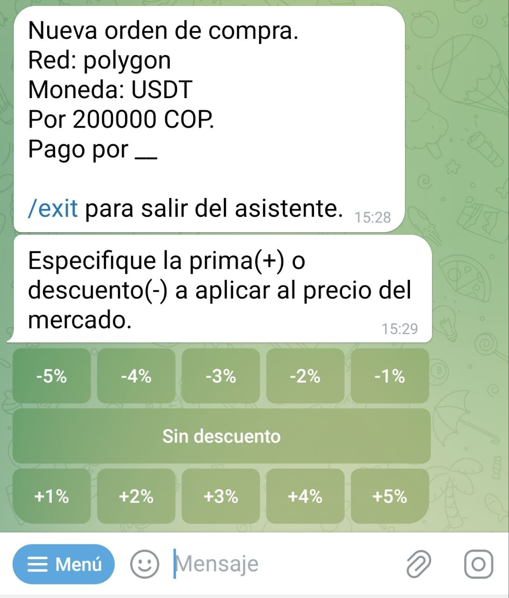
A continuación, deberás especificar el método de pago. En este campo puedes ponerte creativo y añadir emoticones o lo que consideres para hacer atractiva tu oferta.
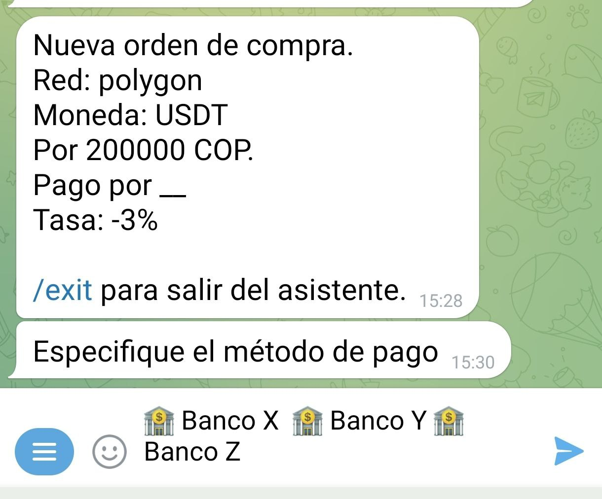
El bot procederá a publicar tu oferta en el canal de la comunidad.
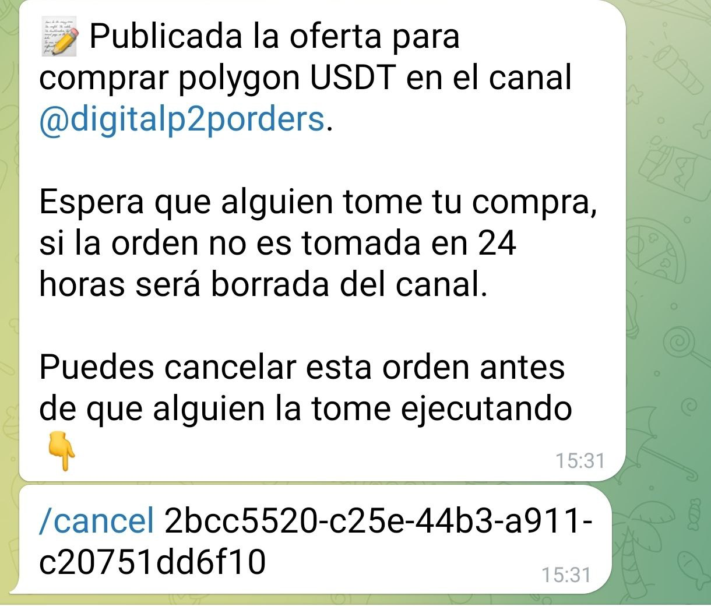
Esta orden permanecerá visible por 23 horas, si nadie la toma antes de ese tiempo la orden se cancela automaticamente y tendras que crear una nueva orden.
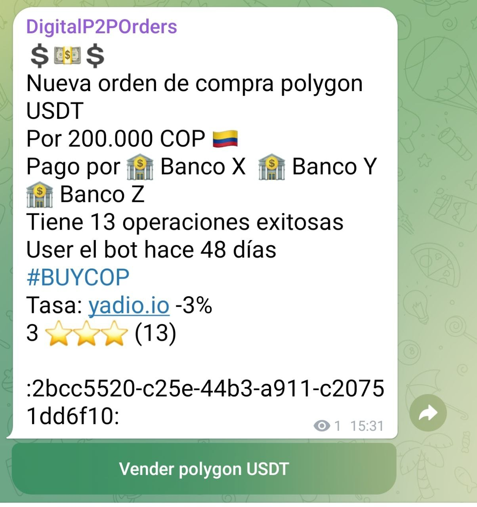
En cualquier momento puedes cancelar la oferta, siempre y cuando nadie la haya tomado, usando el comando /cancel seguido por el identificador de la orden. El asistente te devolverá un mensaje confirmando la cancelación y se removerá tu oferta del canal de ofertas.
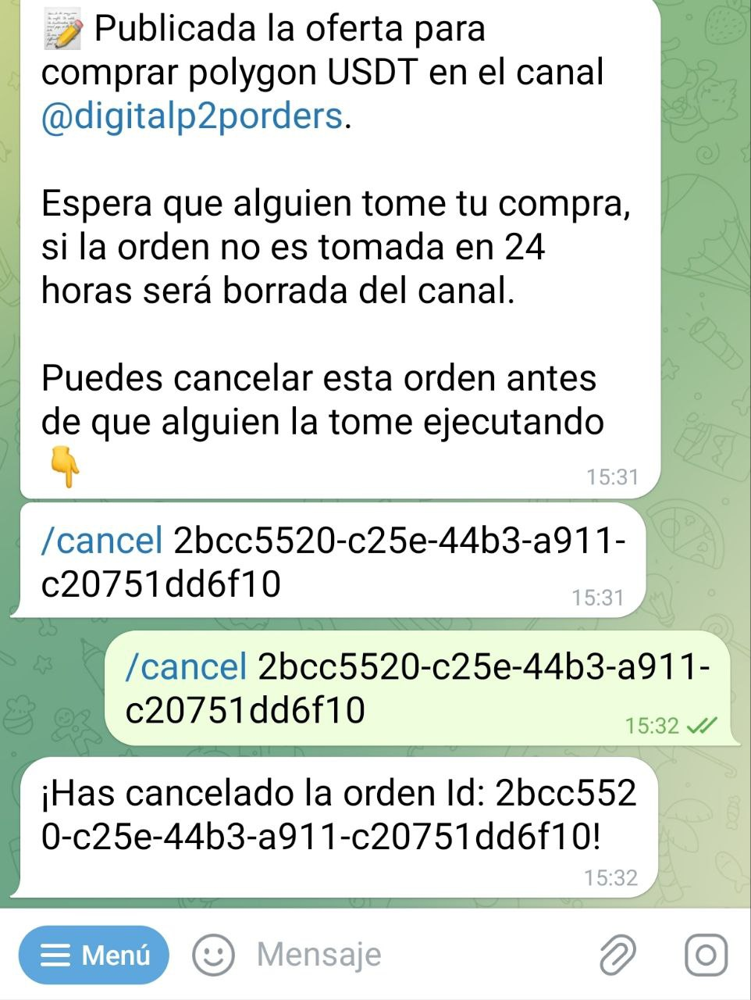
En caso de que tu oferta sea tomada, el asistente te pedirá que ingreses una direccion de polygon donde recibiras los USDT-USDC. Al mismo tiempo le pedirá a tu contraparte que envie los USDT-USDC a la direccion del contrato ingeligente.
En ese momento el bot pondrá en contacto a ambas partes para que discutan los detalles del intercambio.
Una vez que hayas hecho el pago en fíat, notifica al bot con el comando /fiatsent. El bot avisará a tu contraparte para que consulte y verifique la recepción del dinero, y proceda a liberar los USDT-USDC.
El intercambio ha terminado. Ahora puedes calificar a tu contraparte.
Puedes salir del asistente en cualquier momento ejecutando el comando /exit.
Para ejecutar la misma orden de compra, sin usar el asistente, debes escribir tu orden con los detalles: /buy
Ejemplo: /buy 50 200000 COP "Banco XYZ"
Compro cincuenta USDT a docientos mil pesos pago por banco xyz
Algunos ejemplos de órdenes de compra serían los siguientes:
- Ej.
/buy 0 50 ves "banco xyz": Compro cincuenta bolívares en USDT -en este caso el bot hará el cálculo a la tasa de mercado- pago por banco xyz - Ej.
/buy 0 10000-200000 COP "Nequi": Compro de 10.000 a 200.000 pesos-en este caso el vendedor elegirá qué monto venderte en ese rango- pago por pago móvil - Ej.
/buy 0 100 EUR "Euroya" -3: Compro 100 euros descontando 3% -en este caso el bot hará el cálculo a la tasa de mercado descontando o incrementando el porcentaje que elijas- pago por Euroya.
De haber alguna variable no compatible, el bot te lo indicará durante el proceso de creación de la orden. Al completarla, la misma se publicará automáticamente en el canal de intercambio y será visible por un período de 23 horas.
¿Cómo busco y acepto una oferta de compra o venta?
Si nunca antes has utilizado @DigitalP2PBot debes abrirlo y pulsar /start antes de poder tomar alguna oferta.
En el canal de telegram DigitalP2POrders encontrarás publicadas todas las ofertas activas en el bot, incluidas las tuyas.
Revisa todas las opciones hasta encontrar alguna orden que se adapte a tu búsqueda y pulsa el botón Comprar USDT-USDC o Vender USDT-USDC, según sea el caso, luego ve al chat con @DitialP2PBot para seguir sus instrucciones.
¿Cómo cancelo una orden publicada?
Si la orden no ha sido tomada, escribe el comando /cancel en tu chat con el bot o selecciónalo en el "Menú". El bot te mostrará las órdenes activas. Selecciona el ID correspondiente a la orden que deseas cancelar.
El ID o número identificador de tu orden aparece justo debajo del mensaje de aceptación y publicación de tu orden e, incluso, se te indica como opción para cancelarla. También puedes encontrarlo al escribir el comando /listorders
Si tu orden ya fue tomada, o si tomas una orden, y no quieres continuarla deberás iniciar una cancelación cooperativa.
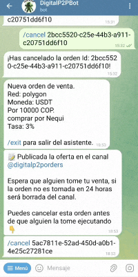
Al iniciar una cancelación cooperativa a tu contraparte se le informará tu intención de cancelar, y si está de acuerdo, también escribirá /cancel <orden id> luego de esto los USDT-USDC serán devuelveltos al vendedor.
Si tu contraparte no quiere cancelar podrán iniciar una disputa, escribiendo el comando /dispute.
¿Hay algún límite (mínimo o máximo) en las cantidades que puedo transar?
Inicialmente el minimo sera de 1 dolar y un limite de 1.000 dolares por cada transacción, pero si quieres comerciar 5.000 dolares puedes hacer 5 transacciones sin ningun incomveniente. Sin embargo, si desea comerciar grandes cantidades tenemos un canal VIP donde los topes son mas altos, para esto deberas contactar algun admnistrador y comertar tu caso.
¿Cuánto tiempo toma concretar una transacción?
Depende de varios factores. Por ser un intercambio P2P, la variable principal es la toma de tu oferta por una contraparte. Tu publicación estará disponible hasta por 23 horas y luego será automáticamente eliminada si nadie la ha tomado.
Una vez aceptada una oferta, se abre una ventana de tiempo de 30 minutos para que el vendedor envie los USDT-USDC a la direccion del contrato ingeligente y el bot ponga en contacto a ambas partes. A partir de este punto, tienen un máximo de 72 horas para concretar la operación. Transcurrido ese tiempo, la orden pasara a revision y el bot informara a un solver la situacion para que este tome contacto con las partes y verificar el motivo por el cual no se ha terminado el intercambio y procedera a liberar los USDT a quien tenga derecho. Por esta razón los usuarios deben utilizar únicamente medios de pago de dinero fíat instantáneos para sus operaciones.
Al estar ambos participantes en línea y acordar métodos de pago inmediatos, las transacciones son casi instantáneas.
¿Debo pagar tarifas y comisiones?
El bot cobra una tasa fija de 0,6%. Esta tasa incluye la tarifa de red, por lo que no hay cobros adicionales. Esta comisión la paga solo el vendedor, no el comprador.
¿Qué tasa de cambio utiliza el bot?
Al crear una orden puedes optar por especificar solo el monto fíat a pagar/cobrar, y no la cantidad de USDT-USDC que deseas comprar/vender, y el bot hará el cálculo a tasa de mercado ofrecida por yadio.io en el momento en que tu orden sea tomada.
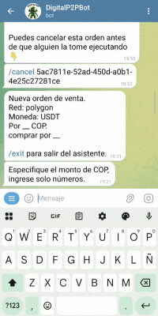
También puedes colocar una prima o un descuento para tu oferta, esto significa que se aplicará un aumento o una disminución al precio de USDT-USDC que marque yadio.io en el momento en que se tome la orden.
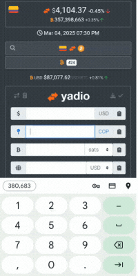
Ejemplos prácticos con su significado:
-
Compro USDT +1%: Quiero comprar USDT un 1% más caro (por encima) que el precio de USDT que marque yadio.io al momento en que alguien tome mi oferta.
-
Compro USDC -5%: Quiero comprar USDC un 5% más barato (por debajo) que el precio de USDC que marque yadio.io al momento en que alguien tome mi oferta.
-
Vendo USDT +3%: Quiero vender USDT un 3% más caro (por encima) que el precio de USDT que marque yadio.io al momento en que alguien tome mi oferta.
-
Vendo USDC -4%: Quiero vender USDC un 4% más barato (por debajo) que el precio de USDC que marque yadio.io al momento en que alguien tome mi oferta.
¿En qué países e idiomas está disponible?
Al ser un intercambio P2P sobre Telegram, técnicamente está disponible para cualquier persona que tenga esta app. Sin embargo, hasta el momento el bot interactúa con un listado de 94 monedas fíat con las que puedes crear órdenes de compra/venta usando el botón Precio de mercado del asistente.
Acá te dejamos el listado. Para verlo dentro de @DigitalP2PBot debes escribir /listcurrencies
| Code | Name | |
|---|---|---|
| AED | United Arab Emirates Dirham | 🇦🇪 |
| ANG | Netherlands Antillean Guilder | 🇧🇶 |
| AOA | Angolan Kwanza | 🇦🇴 |
| ARS | Peso argentino | 🇦🇷 |
| AUD | Australian Dollar | 🇦🇺 |
| AZN | Azerbaijani Manat | 🇦🇿 |
| BDT | Bangladeshi Taka | 🇧🇩 |
| BHD | Bahraini Dinar | 🇧🇭 |
| BIF | Burundian Franc | 🇧🇮 |
| BMD | Bermudan Dollar | 🇧🇲 |
| BOB | Boliviano | 🇧🇴 |
| BRL | Brazilian Real | 🇧🇷 |
| BWP | Botswanan Pula | 🇧🇼 |
| BYN | Belarusian Ruble | 🇧🇾 |
| CAD | Canadian Dollar | 🇨🇦 |
| CDF | Congolese Franc | 🇨🇩 |
| CHF | Swiss Franc | 🇨🇭 |
| CLP | Peso chileno | 🇨🇱 |
| CNY | Chinese Yuan | 🇨🇳 |
| COP | Peso colombiano | 🇨🇴 |
| CRC | Colón | 🇨🇷 |
| CUP | Peso cubano | 🇨🇺 |
| CZK | Czech Republic Koruna | 🇨🇿 |
| DJF | Djiboutian Franc | 🇩🇯 |
| DKK | Danish Krone | 🇩🇰 |
| DOP | Peso dominicano | 🇩🇴 |
| DZD | Algerian Dinar | 🇩🇿 |
| EGP | Egyptian Pound | 🇪🇬 |
| ETB | Ethiopian Birr | 🇪🇹 |
| EUR | Euro | 🇪🇺 |
| GBP | British Pound Sterling | 🇬🇧 |
| GEL | Georgian Lari | 🇬🇪 |
| GHS | Ghanaian Cedi | 🇬🇭 |
| GNF | Guinean Franc | 🇬🇳 |
| GTQ | Quetzal | 🇬🇹 |
| HKD | Hong Kong Dollar | 🇭🇰 |
| HNL | Lempira | 🇭🇳 |
| HUF | Hungarian Forint | 🇭🇺 |
| IDR | Indonesian Rupiah | 🇮🇩 |
| ILS | Israeli New Sheqel | 🇮🇱 |
| INR | Indian Rupee | 🇮🇳 |
| JMD | Jamaican Dollar | 🇯🇲 |
| JOD | Jordanian Dinar | 🇯🇴 |
| JPY | Japanese Yen | 🇯🇵 |
| KES | Kenyan Shilling | 🇰🇪 |
| KGS | Kyrgystani Som | 🇰🇬 |
| KRW | South Korean Won | 🇰🇷 |
| KZT | Kazakhstani Tenge | 🇰🇿 |
| LBP | Lebanese Pound | 🇱🇧 |
| LKR | Sri Lankan Rupee | 🇱🇰 |
| MAD | Moroccan Dirham | 🇲🇦 |
| MGA | Malagasy Ariary | 🇲🇬 |
| MLC | Moneda Libremente Convertible | 🇨🇺 |
| MXN | Peso mexicano | 🇲🇽 |
| MYR | Malaysian Ringgit | 🇲🇾 |
| NAD | Namibian Dollar | 🇳🇦 |
| NGN | Nigerian Naira | 🇳🇬 |
| NIO | Nicaraguan Córdoba | 🇳🇮 |
| NOK | Norwegian Krone | 🇳🇴 |
| NPR | Nepalese Rupee | 🇳🇵 |
| NZD | New Zealand Dollar | 🇳🇿 |
| PAB | Panamanian Balboa | 🇵🇦 |
| PEN | Peruvian Nuevo Sol | 🇵🇪 |
| PHP | Philippine Peso | 🇵🇭 |
| PKR | Pakistani Rupee | 🇵🇰 |
| PLN | Polish Zloty | 🇵🇱 |
| PYG | Paraguayan Guarani | 🇵🇾 |
| QAR | Qatari Rial | 🇶🇦 |
| RON | Romanian Leu | 🇷🇴 |
| RSD | Serbian Dinar | 🇷🇸 |
| RUB | Russian Ruble | 🇷🇺 |
| RWF | Rwandan Franc | 🇷🇼 |
| SAR | Saudi Riyal | 🇸🇦 |
| SEK | Swedish Krona | 🇸🇪 |
| SGD | Singapore Dollar | 🇸🇬 |
| THB | Thai Baht | 🇹🇭 |
| TND | Tunisian Dinar | 🇹🇳 |
| TRY | Turkish Lira | 🇹🇷 |
| TTD | Trinidad and Tobago Dollar | 🇹🇹 |
| TWD | New Taiwan Dollar | 🇹🇼 |
| TZS | Tanzanian Shilling | 🇹🇿 |
| UAH | Ukrainian Hryvnia | 🇺🇦 |
| UGX | Ugandan Shilling | 🇺🇬 |
| USD | US Dollar | 🇺🇸 |
| USDSV | USD en El Salvador | 🇺🇸🇸🇻 |
| USDVE | USD en Bs | 🇺🇸🇻🇪 |
| USDUY | USD en Uruguay | 🇺🇸🇺🇾 |
| UYU | Peso uruguayo | 🇺🇾 |
| UZS | Uzbekistan Som | 🇺🇿 |
| VES | Bolívar | 🇻🇪 |
| VND | Vietnamese Dong | 🇻🇳 |
| XAF | CFA Franc BEAC | 🏳️ |
| XOF | CFA Franc BCEAO | 🏳️ |
| ZAR | South African Rand | 🇿🇦 |
Por ahora, @DigitalP2PBot está totalmente disponible en inglés, español.
Para cambiar el idioma del asistente usa el comando /setlang
Si quieres ayudar traduciendo DigitalP2PBot a tu idioma puedes proponer tu colaboración en el grupo de la comunidad @DigitalP2PChat
Wallets recomendadas
Las siguientes wallets son las que han demostrado un mejor rendimiento al usarlas con @DigitalP2PBot
Notas sobre otras wallets
- Antes de vender o comprar USDT-USDC usando cualquier wallet, infórmate si soporta la red Polygon.
Problemas Comunes y sus soluciones
Estoy intentando tomar una orden y no pasa nada
Al pulsar el botón Comprar USDT-USDC o Vender USDT-USDC de una oferta, @DigitalP2PBot te responderá por privado lo que debes hacer para completar el proceso.
Para que el bot pueda responder a tu solicitud es necesario que lo inicialices, pues ningún bot puede abrirte un chat de primero si no lo has usado antes. Abre @DigitalP2PBot y escribe el comando /start o toca el botón de Iniciar, luego intenta nuevamente tomar la orden, regresa al bot y sigue sus instrucciones.
Mi contraparte tuvo un problema al enviarme el pago en fíat y luego desapareció, mis USDT-USDC quedaron bloqueados
NO se preocupe, la transacción NO se cancelará automáticamente. Usted debe abrir una disputa con el comando /dispute <order id>, para que el solver le regrese los USDT-USDC.
Un usuario tomó mi compra por error y ya hice el pago de los USDT-USDC.
Se puede iniciar una cancelación cooperativa. Ambos deben ejecutar el comando /cancel <order id>.
Cancelé una orden pero los USDT-USDC no han vuelto a mi wallet. ¿Cuánto debo esperar?
Cuando una orden es cancelada los USDT-USDC del vendedor retornan inmediatamente a la wallet que realizó el pago. algunas veces los USDT-USDC pueden tardar desde unos minutos hasta un par de horas dependiendo de la congestion de la red, pero en todas las wallets retorna el 100% de tus fondos, paciencia.
Estoy comprando y el bot no me pide una direccion, sino que me pone directamente en contacto con el vendedor
Esto pasa porque ya has ingresado una direccion donde recibir los USDT-USDC. En ese caso los USDT-USDC que compres serán enviados directamente hacia allí sin pedirte una nueva direccion en cada compra. Para revisar tu direccion escribe dentro del bot el comando /settings, si quieres cambiar la direccion escribe dentro del bot el comando /setwalletaddress.
¿Cómo sé si el vendedor realmente liberó los USDT-USDC?
Si @DigitalP2PBot te dice que el vendedor liberó, es porque realmente es así, pero si quieres verificarlo puedes hacerlo de la siguiente manera:
Escríbele al bot /listorders y si el bot aún está en proceso de pagar tu USDT-USDC el status que verás será RELEASE, si el bot ya pagó la factura la orden no aparecerá en la lista.
Cuando una orden tiene status RELEASE, el vendedor ya no tiene ninguna responsabilidad debido a que ha liberado los USDT-USDC, si tienes problemas para recibir ve a la sección El vendedor liberó pero no me llegan los USDT-USDC a mi wallet.
El vendedor liberó pero no me llegan los USDT-USDC a mi wallet
Posibles causas
En ocasiones la red esta congestionada y esto retarda la transaccion.
Solución
Esperar es lo mejor en este caso, pero si la transaccion esta tardando mucho tiempo puede consultar en la comunidad de sorporte en telegram @DigitalP2PChat informando la situacion con el ID de la orden.
Soporte
@DigitalP2PBot no es una empresa, por ello no cuenta con un departamento de soporte técnico, aunque sí hay una comunidad a la que puedes acudir en caso de que lo necesites.
El principal grupo de Telegram donde puedes pedir ayuda es:
- Grupo en español: https://t.me/DigitalP2PChat
Contacto con desarrolladores
Si necesitas ponerte en contacto con los desarrolladores de @DigitalP2PBot, usa nuestro GitHub, si tienes alguna propuesta o deseas informar un error, ve a la sección de problemas y crea uno.
Soy desarrollador y quiero contribuir
¡Genial! Gracias por tu interés. En la sección de issues podrás ver una lista de asuntos por resolver. Elige uno con etiqueta [help wanted]. Si tienes dudas puedes preguntar haciendo un comentario. Luego, si estás seguro de que quieres resolverlo, coméntalo. Los que tienen etiqueta [good first issue] son sencillos y muchas veces sirven para familiarizarte con el código.
Desde que iniciamos este proyecto quisimos comenzar a operar con @DigitalP2PBot sin hacer mucho ruido. Era fundamental probar el bot en una comunidad pequeña antes de mostrarle al mundo un producto final. Por eso comenzamos a trabajar con la comunidad de Colombia, la cual recibió el proyecto de muy buena manera. El feedback recibido le ha permitido al bot ir creciendo y mejorando día a día.
Confianza
El modelo que hemos elegido para resolver disputas es el de la confianza. Esto parece paradójico para quienes trabajamos con criptomonedas, porque siempre hemos abogado por sistemas "trustless", y la verdad es que el objetivo siempre es desarrollar sistemas en los cuales no tengamos que confiar en nadie. Pero luego de pensar mucho en sistemas de resolución de disputas, tuvimos que aceptar que siempre, en alguna medida, hay que confiar en alguien.
Dictador benevolente
Habiendo aceptado que para resolver una disputa hay que confiar en alguien, ¿cómo hacer que haya menos incentivos para crear disputas? Con respecto a este tema, la comunidad hizo varias propuestas. Y la que desarrollamos es utilizar la figura del “dictador benevolente”. Se trata de un “dictador” al que la gente acepta y confía en que sus decisiones son tomadas para el bien de la comunidad. Digamos que es un mediador de confianza de la comunidad.
El dictador benevolente es quien puede agregar solucionadores de disputas o 'solvers'. Estos son públicamente conocidos por la comunidad (nos referimos a su “username” en Telegram). La comunidad se encargará de denunciar si estos usuarios están haciendo su trabajo correctamente o no. En una comunidad donde el “dictador benevolente” seleccione correctamente a los solvers todo funcionará bien; en una donde el dictador cometa errores, sus súbditos se irán a otro servicio.
¿Qué es un Solver?
Los solvers son usuarios, designados por el administrador de la comunidad, que se encargan de resolver las disputas y mantener el orden.
Una comunidad debe tener, al menos, un solver. Para esto no hay ningún tipo de requisito, el administrador puede agregarlos o removerlos en cualquier momento.
El administrador puede ser solver de su propia comunidad.
Resolviendo disputas
Cuando un usuario inicia una disputa, un mensaje será enviado por el bot al canal de las disputas. Solo los solvers podrán tomarlas, tocando el botón Take dispute. Antes de tomar una disputa, el solver debe estar seguro de que tiene la comunidad configurada, para configurar la comunidad, el solver debe ejecutar el comando /setcomm @community-group.

Una vez el solver tome la disputa, el bot le enviará toda la información necesaria para resolverla, incluyendo el número de token del vendedor y el comprador, ese número es diferente para cada uno. El solver deberá escribirle a ambos y decirles su número de token, para que puedan comprobar que él realmente tomó la disputa. Luego deberá pedir las pruebas necesarias para entender que pasó y completar la orden o cancelarla.
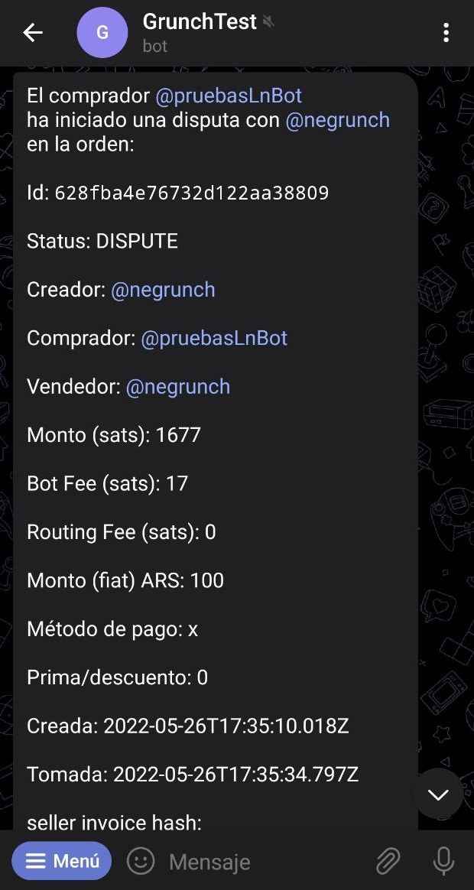
Completando una orden
Muchas disputas se inician porque una de las dos partes tardó en responder un mensaje, hubo un malentendido o una demora en algún pago. Estos son casos sencillos que solo requieren paciencia y ayudar en la comuncación.
Otros casos involucran malicia, como por ejemplo puede haber un vendedor que quiera quedarse con el dinero fiat y que le retornen los USDT-USDC. Para estos casos el solver puede ejecutar el comando /settleorder, lo que hace este comando es que reconoce el pago recibido y automáticamente envía los sats al comprador.
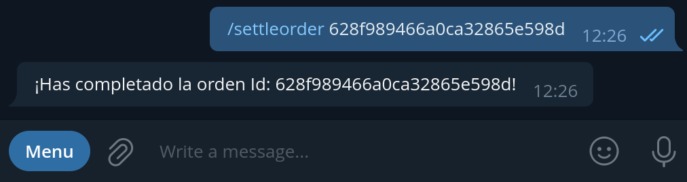
Completando una orden cuando el fíat tarda demasiado en llegar
Con @DigitalP2PBot se deben utilizar métodos de pago que garanticen que el envío del fíat sea instantáneo. Sin embargo, puede haber casos en los que el fíat demore más de lo habitual en llegar al vendedor de los USDT-USDC, por ejemplo, debido a problemas en el procesamiento del pago por parte del banco, es ahi donde los usuarios pueden acudir a los solvers de la comunidad que actuarán como mediadores y resolveran los inconvenientes.
Un solver puede liberar los USDT-USDC tando al vendedor como al comprador dependiendo de los soporte que las partes entreguen para resolver la disputa.
Cancelando una orden
La otra alternativa que tiene el solver es cancelar la orden, si el caso lo amerita. Para ello usa el comando /cancelorder. Este comando le retorna los sats al vendedor.

Eliminando disputas
Cada vez que un usuario inicia una disputa tanto él como su contraparte quedan envueltos en la misma. Hasta que no se resuelva ambos quedan relacionados. Al resolverse, el solver tiene la potestad de eliminar esta disputa a uno de los usuarios o a los dos, si lo necesita, usando el comando
/deldispute username id-de-orden.

Expulsar a un usuario de la comunidad
Si un solver lo considera necesario puede expulsar a un usuario de la comunidad con el comando /ban seguido de su username.
Intercambios seguros en @DigitalP2PBot
@DigitalP2PBot es una herramienta segura para el intercambio de USDT-USDC de forma P2P sin KYC debido a que cuando dos personas entran en contacto para hacer una compra-venta los USDT-USDC del vendedor quedan retenidos en un contrato inteligente y no los podrá utilizar mientras estén en dicho contrato. Cuando el comprador de USDT-USDC envíe el dinero fíat, y el vendedor le confirme al bot que ya lo recibió, los USDT-USDC se enviarán desde el contrato inteligente hacia el comprador.
El bot cuenta con un sistema de reputación de los usuarios que toma en cuenta la cantidad de operaciones exitosas y las calificaciones recibidas, además, muestra la cantidad de días que una persona ha estado utilizándolo. Estos datos pueden ayudarte a tomar decisiones sobre aceptar o rechazar ofertas según tus propios intereses.
Adicionalmente, la comunidad @DigitalP2PBot cuenta con varios Solver, quienes son los responsable de mediar en las disputas que puedan surgir, ellos solicitará las pruebas necesarias a las partes involucradas y determinará quién tiene razón y por tanto recibirá los USDT-USDC. Cuando se detecta a un estafador es baneado permanentemente y se le prohíbe seguir utilizando el bot.
Intentos de estafas
Los intentos de estafas utilizando el bot no son frecuentes, pero como cualquier intercambio P2P descentralizado y sin KYC, no está exento de ellos. Para evitar ser estafados debemos actuar con cautela, estar atentos a comportamientos sospechosos y ante cualquier duda cancelar la operación o abrir una disputa.
Posibles estafas:
-
Un estafador que desea comprar USDT-USDC puede utilizar el comando
/fiatsentpara indicar que ha enviado el dinero fíat cuando en realidad no lo ha hecho, pretendiendo que el vendedor confíe en su palabra y libere los USDT-USDC sin verificar que realmente el fíat le llegó. Es muy importante que el vendedor compruebe que recibió el fíat antes de pulsar el comando/release, incluso si el comprador le envía una imagen como prueba de pago, ya que esta podría estar manipulada. -
Algunos métodos de pago de fíat son reversibles, como PayPal, lo cual puede ser aprovechado por un estafador para comprar USDT-USDC y luego revertir el envío del fíat. Recomendamos utilizar únicamente métodos de pago irreversibles para evitar este tipo de estafas.
-
Otra forma de actuar de algunos estafadores es hacer varias operaciones dentro del bot para establecer relaciones con otros usuarios, y luego contactarlos en privado para convencerlos de hacer operaciones fuera del bot, esto es riesgoso debido a que nada garantiza que vayan a cumplir con su parte. Recomendamos no hacer los intercambios fuera del bot incluso si las ofertas son tentadoras, puedes pedirle, que para mayor seguridad de ambos, las realicen utilizando @DigitalP2PBot.
-
También pueden existir suplantadores de administradores y solvers, que les escriban a los usuarios para pedirles dinero, o persuadirlos de oprimir
/releaseo/cancela una orden, pedir que paguen una factura para "cancelar luego la orden", etc. Comprueba siempre la legitimidad de quien te escriba, puedes comprobar quiénes son los administradores en la comunidad. consultando en el grupo de soporte general.
Consejos para evitar estafas
-
Si vas a utilizar @DigitalP2PBot por primera vez, infórmate sobre su funcionamiento, revisa la documentación disponible y comienza con pequeñas cantidades hasta que domines el proceso completamente.
-
Antes de tomar una oferta fíjese en la reputación del usuario, el número de intercambios, el tiempo de uso del bot, así como el volumen de comercio si lo tiene visible. Desconfía de ofertas demasiado buenas, especialmente si provienen de usuarios con poco tiempo de uso del bot y a la vez numerosas operaciones.
-
Un administrador nunca te escribirá para resolver un problema a menos que abras una disputa primero. Ten cuidado con los suplantadores.
-
Si abres una disputa escríbele al solver que el bot te indique, pero si él/ella te escribe primero, pídele el número de token de tu disputa, así te aseguras de estar hablando con el/la solver real, pues ese número solo lo conocen tú y el/la solver que te atienda.
-
Un administrador nunca te pedirá que pongas
/releaseo/cancel. En caso de disputas ellos tienen la potestad para cancelar o completar una orden, desconfía si un admin te lo pide y verifique que sea legítimo -
No accedas a realizar intercambios fuera del bot.
-
No accedas a cambiar el método de pago del fíat si no era el que estaba en la oferta.
-
Si no te sientes cómodo con un intercambio puedes pedirle a tu contraparte hacer una cancelación cooperativa siempre y cuando el fíat no se haya enviado.
-
Tenga cuidado con comunidades con nombres parecidos.
-
No accedas a realizar un intercambio en otra comunidad si no fuiste tú quien la eligió.
-
Si vas a abrir una disputa, hazlo a tiempo, despues de 6 horas es recomendable abrir una disputa si tienes algun problema para finalizar el intercambio.
-
Si detectas comportamientos sospechosos, infórmalos a los administradores de la comunidad correspondiente. Ellos podrán tomar las medidas adecuadas para proteger a los usuarios.
-
Envíale a tu contraparte solo los datos personales imprescindibles para llevar a cabo el intercambio, no proporciones más información de la necesaria, como tu número de teléfono personal, tu dirección, etc.
-
Si alguien con quien has hecho operaciones anteriores te hace un envío de dinero fíat sin previo aviso (aunque diga que fue un error) y te exige que le envíes los USDT-USDC correspondientes, puede tratarse de una estafa puente. En este caso se aconseja devolver el dinero fíat a la misma cuenta desde donde se te envió y no continuar con el intercambio forzado al que intenta llevarte.
Estafas por triangulación de cuentas o estafas puente
Este tipo de estafas es difícil de prevenir y detectar ya que, desde la perspectiva del vendedor, todo parece transcurrir con normalidad. Es importante tener en cuenta que pueden ocurrir en cualquier tipo de intercambio P2P, no solo en @DigitalP2PBot. Consisten en que un estafador hace de intermediario entre la víctima y el vendedor, este último recibe el fíat que envía la víctima, pero entrega los USDT-USDC al estafador.
El estafador ofrece la venta de productos o servicios (ya sea un objeto de segunda mano, o incluso el desbloqueo de iPhones) en cualquier red social o plataforma especializa en compraventas, y cuando la víctima lo contacta, él solicita un pago por adelantado. Simultáneamente el estafador publica una oferta de compra de USDT-USDC en @DigitalP2PBot (u otro intercambio P2P) por una cantidad equivalente al fíat que va a estafar (también puede poner una oferta con una prima alta para hacerla más atractiva). Cuando el estafador encuentra a un vendedor de USDT-USDC y le pide sus datos para hacer el envío del fíat, le da esos datos a la víctima para que le haga el pago por adelantado, anteriormente mencionado. Una vez que el fíat de la víctima le llega al vendedor de USDT-USDC este pulsa el comando /release y los USDT-USDC son liberados para el estafador, quien desaparece y nunca realiza el servicio o la venta que le prometió a la víctima.
Se debe recalcar que el vendedor de USDT-USDC es una víctima más en esta triangulación, pues él solo interactúa con el estafador sin saber que existe una tercera persona en el intercambio y asume que el fíat que recibe lo envió directamente el comprador de sus USDT-USDC, sin embargo puede verse envuelto en una acusación por estafa cuando sus datos bancarios son entregados a las autoridades en una denuncia por el pago de un servicio o producto que no fue recibido. Es recomendable no borrar el historial del bot o los chats con tus compradores de USDT-USDC, o realizar una copia de respaldo, ya que estos registros pueden ser necesarios como prueba en caso de que se requiera demostrar que no se ha estafado a nadie.
Algunos estafadores pueden incluso pedir información personal adicional a los vendedores para luego compartirla con las víctimas directas de las triangulaciones y generarles mayor confianza. Por ello, se recomienda no proporcionar información personal como números de teléfono, nombres completos o direcciones, a menos que sean imprescindibles para el método de pago utilizado.
Prevención de estafas puente
No existe un método totalmente efectivo para evitar que un vendedor se involucre en una estafa puente. Sin embargo, además de seguir los consejos que mencionamos anteriormente para prevenir estafas, existen otras medidas que como vendedor podrías tomar para reducir el riesgo, entre ellas:
-
Si quieres hacer una venta grande de USDT-USDC, es preferible que la dividas en varias ventas pequeñas, a menos que el comprador tenga un buen historial de operaciones contigo y siempre utilice la misma cuenta bancaria.
-
Si una oferta de compra es demasiado buena, ten cuidado, puede tratarse de una estafa.
-
En los métodos de pago del fíat que permitan añadir comentarios en el envío, podrías pedir al comprador que escriba una frase específica que le digas en ese momento, como por ejemplo "Estoy comprando una naranja" de forma que si él fuera un estafador, tendría que pedirle a la víctima que escriba ese comentario para enviar el fíat y esta podría sospechar de que se trata de una estafa pues es muy posible que no esté comprando una naranja.
Esa frase se puede modificar por un código numérico u otro mensaje que creas adecuado para evitar una estafa. Otra forma no tan recomendable debido a los problemas de privacidad que pudieran conllevar es pedir que la frase sea: "Este pago es por una compra de X USDT-USDC en @DigitalP2PBot por la orden con ID: Y".
-
Algunos métodos de pagos de fíat no permiten añadir comentarios, pero sí revelan los números de teléfono de ambas partes, en estos casos también podrías pedirle al comprador antes de liberar los USDT, un SMS que llegue del número que te envió el fíat y que contenga alguno de los mensajes anteriores o mensajes similares. Otra forma podría ser que te haga una llamada o tú la hagas, y hablen directamente para confirmar que no haya una tercerización en el envío del fíat.
-
Otra opción no muy recomendable si no quieres violar la privacidad del comprador es pedirle una videollamada en telegram donde muestre que posee la tarjeta de la cual te enviaron el dinero, aunque no es necesario que muestre su rostro para ello.
Recuerda que si no te sientes a gusto con una operación, puedes hacer una cancelación cooperativa con /cancel y devolver el fíat a la misma cuenta desde donde te lo enviaron, si la contraparte no quiere colaborar debes abrir una disputa con /dispute y esperar a que un solver resuelva el caso.
Las medidas preventivas aquí mencionadas no son aplicables para todos los métodos de pago del dinero fíat. Si conoces de otras, por favor, compártelas y contribuye a evitar estafas.
¿Cómo colaborar?
DigitalP2PBot es un proyecto open source, mantenido por la comunidad. Muchos usuarios preguntan cómo pueden contribuir, o si es necesario tener conocimientos de programación para hacerlo, en esta sección te presentamos algunas formas en las que puedes colaborar, aunque no son las únicas, cualquier tipo de ayuda es valiosa para el proyecto. Muchas gracias por considerarlo!
-
Traducción del Bot: Si eres multilingüe, puedes ayudar a traducir el bot a otros idiomas para para ampliar su accesibilidad.
-
Ayuda con la Documentación y su traducción: Si tienes habilidades en redacción y/o traducción, puedes colaborar a mejorar la documentación del proyecto, y/o traducirla, haciendo que sea más accesible y comprensible para todos.
-
Desarrollo: Si eres un desarrollador, tus habilidades son fundamentales. Puedes contribuir escribiendo código, implementando nuevas funciones y corrigiendo errores.
-
Reportar errores: Si encuentras algún error o comportamiento inesperado en el bot, informarlo es de gran utilidad. Nos ayuda a mejorar la estabilidad y la calidad del proyecto.
-
Proponer mejoras: Si tienes ideas para mejorar DigitalP2PBot, te invitamos a compartirlas con nosotros, varias características importantes del bot han salido de propuestas de la comunidad.
-
Crear video-tutoriales y guías: Si tienes habilidades en la creación de contenido multimedia, puedes hacer video-tutoriales o guías escritas para ayudar a los usuarios a sacar el máximo provecho del bot.
-
Difusión en redes sociales: Compartir información sobre DigitalP2PBot en redes sociales ayuda a aumentar su visibilidad y atraer a más personas interesadas en contribuir o utilizarlo.
-
Donaciones: Si deseas apoyar financieramente el desarrollo y mantenimiento de DigitalP2PBot, considera realizar una donación. Cada contribución ayuda a cubrir costos de alojamiento, desarrollo y otros gastos relacionados con el proyecto. Puedes donar ¡muchas gracias!
¿Cómo traducir el bot?
Para traducir DigitalP2PBot, debes hacer una solicitud de extracción [(Pull Request o PR)] en el repositorio de GitHub https://github.com/DigitalP2PBot/bot agregando un nuevo archivo .yaml con la traducción de las cadenas del bot.
El nuevo archivo yaml debe ser nombrado utilizando códigos de idioma ISO 639-1, por ejemplo, en español es es, entonces el nombre debería ser es.yaml.
Si no eres una persona técnica, no te preocupes, simplemente descarga en.yaml o la traducción donde te sientas más comodo, tradúcelo y envíalo a algún administrador del grupo de telegram.
¿Cómo traducir y colaborar con la documentación?
La documentación de DigitalP2PBot se ha creado con mdBook, una herramienta versátil que nos permite organizarla de manera clara y coherente, esto incluye la creación de capítulos, secciones, enlaces cruzados etc, logrando una navegación fluida y una comprensión fácil del contenido.
A continuación explicamos paso a paso cómo traducir la documentación, aunque también te puede ser útil si deseas agregar más contenido o mejorar el material existente:
-
Instala Rust: https://www.rust-lang.org/tools/install
-
Instala mdBook:
$ cargo install mdbook
- Clona el repositorio y crea un nuevo directorio del idioma: Clona el repositorio https://github.com/DigitalP2PBot/doc-site y luego crea un nuevo directorio para el idioma al que deseas traducir la documentación basado en el directorio existenete en inglés o español (son los que se actualizan con mayor frecuencia).
$ git clone https://github.com/DigitalP2PBot/doc-site.git
$ cd doc-site
$ cp -r english <tu-idioma>
- Modifica el archivo
book.toml: Debes establecer los parámetroslanguageytitleen el archivobook.toml. Paralanguagedebes usar los códigos de idioma ISO 639-1; y entitledebes sustituir "Learn" por su equivalente en tu idioma.
language = "en"
title = "Learn @DigitalP2PBot"
- Visualiza el Libro Localmente: Una vez dentro del directorio que hemos copiado, puedes ver cómo se ve el libro localmente utilizando el siguiente comando:
$ cd <tu-idioma>
$ mdbook serve
Luego, abre http://localhost:3000 en tu navegador web para visualizar el libro creado.
- Comienza la Traducción: Para comenzar a traducir la documentación accede a cada archivo
.mddentro del directoriosrc. Los cambios que realices se mostrarán automáticamente actualizados en el libro en http://localhost:3000 mientras mdBook esté en ejecución.
-
En el archivo
SUMMARY.md, encontrarás la estructura de los capítulos del libro. Solo necesitas traducir los títulos de los capítulos, encerrados entre corchetes [ ], sin modificar los enlaces, encerrados entre paréntesis ( ). -
Para remplazar alguna imagen o gif por uno en tu idioma debes ponerlo en
/assets/images/y eliminar el archivo original, pero ponerle su mismo nombre al nuevo. -
No traduzcas los nombres de los archivos
.mdni los enlaces.
- Envía una Solicitud de Extracción (Pull Request o PR): Cuando hayas terminado la traducción debes hacer una solicitud de extracción [(Pull Request o PR)] en el repositorio de GitHub https://github.com/DigitalP2PBot/doc-site.
Tips
- Consulta esta guía sobre Cómo dar formato a los textos con markdown.
- Podrías hacer las traducciones sin usar mdBook simplemente traduciendo cada archivo y subiendo el PR, aunque de esa forma podrías cometer errores
- Si encuentras dificultades al seguir este tutorial, contacta con algún administrador del grupo de telegram para recibir ayuda.
Desarrollo
Esta guía se basa en la guía de contribución de Bisq.
Cualquiera es bienvenido a contribuir con DigitalP2PBot.
Canales de Comunicación
La mayoría de la comunicación sobre DigitalP2PBot ocurre en el grupo de Telegram. La discusión sobre cambios de código ocurre en los problemas y solicitudes de extracción de GitHub.
Flujo de Trabajo del Contribuidor
Todos los contribuidores de DigitalP2PBot envían cambios a través de solicitudes de extracción. El flujo de trabajo es el siguiente:
- Hacer un fork del repositorio.
- Crear una rama temática a partir de la rama
main. - Hacer commits de los parches.
- Unificar commits redundantes o innecesarios.
- Enviar una solicitud de extracción desde la rama de tu tema a la rama
maindel repositorio principal - Realizar cambios en la solicitud de extracción si los revisores lo solicitan y solicitar una revisión.
Las solicitudes de extracción deben centrarse en un único cambio. No mezcles, por ejemplo, refactorizaciones con una corrección de errores o la implementación de una nueva característica. Esta práctica facilita que los demás contribuidores revisen cada solicitud de extracción.
Revisión de Solicitudes de Extracción
DigitalP2PBot sigue el flujo de trabajo de revisión establecido por el proyecto Bitcoin Core. Lo siguiente está adaptado de la documentación para contribuidores de Bitcoin Core:
Cualquiera puede participar en la revisión de pares, que se expresa mediante comentarios en la solicitud de extracción. Generalmente, los revisores revisarán el código en busca de errores obvios, además de probar el conjunto de parches y opinar sobre los méritos técnicos del parche. Los mantenedores del proyecto tienen en cuenta la revisión de pares al determinar si hay consenso para fusionar una solicitud de extracción (recuerda que las discusiones pueden haberse dispersado en GitHub y Telegram). El siguiente lenguaje se usa dentro de los comentarios de la solicitud de extracción:
ACK significa "He probado el código y estoy de acuerdo en que debería fusionarse"
NACK significa "Discrepo en que esto deba fusionarse" y debe ir acompañado de una justificación técnica sólida. Los NACKs sin justificación acompañante pueden ser ignorados
utACK significa "No he probado el código, pero lo he revisado y parece estar bien, estoy de acuerdo en que puede fusionarse"
Concept ACKsignifica "Estoy de acuerdo en el principio general de esta solicitud de extracción"
Nit se refiere a problemas triviales, a menudo no bloqueantes.
Ten en cuenta que las solicitudes de extracción marcadas como NACK y/o Change requested en GitHub se cierran después de 30 días si no se abordan.
Convenciones de estilo y codificación
Estándares de codificación
Seguimos la guía de estilo de JavaScript de Airbnb para tener un código más limpio.
Configurar el nombre de usuario y correo electrónico de Git
Consulta https://help.github.com/articles/setting-your-username-in-git/ para obtener instrucciones.
Escribir mensajes de confirmación bien formados
Desde https://chris.beams.io/posts/git-commit/#seven-rules:
- Separar el asunto del cuerpo con una línea en blanco
- Limitar la línea de asunto a 50 caracteres (*)
- Poner en mayúscula la línea de asunto
- No terminar la línea de asunto con un punto
- Usar el modo imperativo en la línea de asunto
- Envolver el cuerpo en 72 caracteres (*)
- Usar el cuerpo para explicar el qué y el porqué frente al cómo
Firmar tus commits con GPG
Consulta https://github.com/blog/2144-gpg-signature-verification para obtener antecedentes y https://help.github.com/articles/signing-commits-with-gpg/ para obtener instrucciones.
Mantener limpio el historial de Git
Es muy importante mantener el historial de git claro, ligero y fácilmente navegable. Esto significa que los contribuyentes deben asegurarse de que sus solicitudes de extracción incluyan solo confirmaciones significativas (si son redundantes o se agregaron después de una revisión, deben eliminarse) y no incluir ninguna confirmación de fusión.
Reportar errores
Si encuentras algún error o comportamiento inesperado es de gran utilidad que lo reportes para que pueda ser corregido lo antes posible.
Para hacerlo dirígete a https://github.com/DigitalP2PBot/bot/issues y selecciona New issue. Luego elige Bug report, añade un título que sintetice de forma clara de cúal es el error, y luego completa la información sobre el bug que aparece en la plantilla. También puedes poner algún otro dato aunque no lo pida la plantilla. Finalmente envía el reporte con Submit new issue.
Proponer mejoras
DigitalP2PBot está mantenido por su comunidad, grandes mejoras han salido de propuestas de usuarios. Si tienes alguna idea que crees puede mejorar el funcionamiento del bot, facilitar su uso por los ususrios, etc, no dudes en ponerla, podría ser un gran aporte!
Para hacerlo dirígete a https://github.com/DigitalP2PBot/bot/issues y selecciona New issue. Luego elige Feature request, añade un título que sintetice de forma clara tu propuesta, y luego completa la información que aparece en la plantilla. También puedes poner algún otro dato aunque no lo pida la plantilla. Finalmente envía el tu solicitud con Submit new issue.